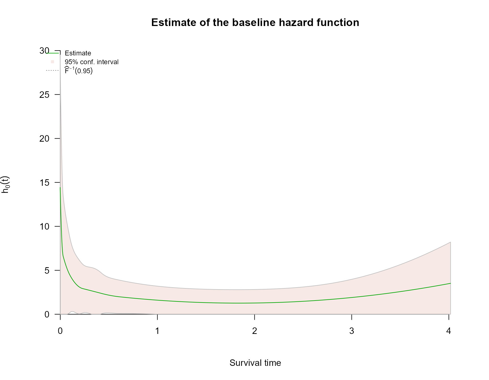
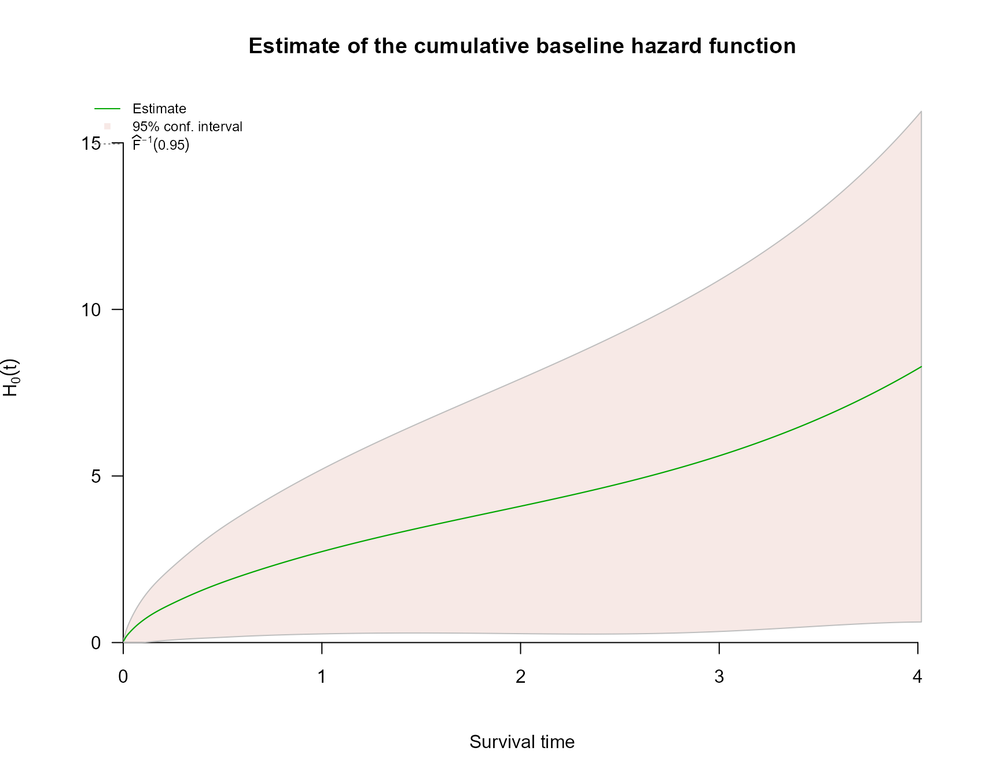
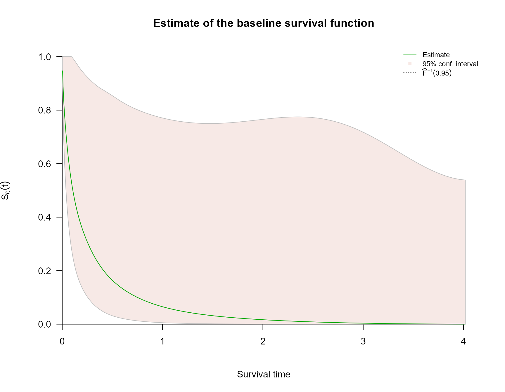

Interval Censoring with survivalMPL
interval-censoring.RmdOverview
Survival times are interval-censored when the event is known to have occurred in an interval rather than at an exact time. This is common in clinical studies where patients are examined only periodically (e.g. follow-up visits).
survivalMPL handles partly interval-censored data —
datasets that may contain a mix of exact event times and left-, right-,
and interval-censored observations. The censoring type is communicated
through survival::Surv(..., type = "interval2").
This tutorial presents two examples from Ma et al. (2024).
Example - Simulation study
We compare the MPL M-spline method against partial likelihood (PL) with midpoint imputation. The true model is a Cox model with Weibull baseline hazard , covariates and , and true coefficients .
simulate() function
library(survivalMPL)
#> Loading required package: survival
#> Loading required package: MASS
library(survival)
# Write simulate() function to repeatedly generate a sample
simulate <- function(n, pi_E, g1, g2){
# Simulate covariates
x1 <- runif(n, 0, 1)
x2 <- 5 * runif(n, 0, 1)
X <- cbind(x1, x2)
beta_true <- c(0.75, -0.5)
eXtB <- exp(X %*% beta_true)
# Simulate true event times
neg.log.u <- - log(runif(n, 0, 1))
y_i <- (neg.log.u/(eXtB))^(1/3)
# Simulate censoring types & times
u_E <- runif(n, 0, 1)
u_L <- runif(n, 0, 1)
u_R <- runif(n, u_L, 1)
t_L <- (y_i^as.numeric(u_E < pi_E)) *
(g1 * u_L)^as.numeric(pi_E < u_E & g1*u_L <= y_i & y_i <= g2*u_R) *
(g2 * u_R)^as.numeric(pi_E < u_E & g2*u_R < y_i) *
0^as.numeric(pi_E < u_E & y_i < g1*u_L)
t_R <- (y_i^as.numeric(u_E < pi_E)) *
(g1 * u_L)^as.numeric(pi_E < u_E & y_i < g1*u_L) *
(g2 * u_R)^as.numeric(pi_E < u_E & g1*u_L <= y_i & y_i <= g2*u_R) *
Inf^(pi_E < u_E & g2*u_R < y_i)
# Compute midpoint and censoring type for midpoint imputation
midpoint <- t_L + (t_R - t_L)/2
event <- rep(1, n)
event[which(is.infinite(midpoint))] <- 0
midpoint[which(is.infinite(midpoint))] <- t_L[which(is.infinite(midpoint))]
df = data.frame(t_L, t_R, x1, x2, midpoint, event)
return(df)
}Simulation loop
The loop runs 100 replicates and is not evaluated during vignette build due to computation time.
# Run a simulation study
ch2_ex26_save = matrix(0, nrow = 100, ncol = 8)
baseline_h0 = NULL
for(s in 1:100){
# Generate data set
dat <- simulate(n=500, pi_E = 0.5, g1 = 0.9, g2 = 1.3)
# Fit MPL model
fit.mpl <- coxph_mpl(Surv(t_L, t_R, type = "interval2") ~
x1 + x2, data = dat, basis = "m", n.knots = c(5,0))
# Save coefficient estimates & SE
ch2_ex26_save[s,1] <- fit.mpl$coef$Beta[1]
ch2_ex26_save[s,2] <- fit.mpl$coef$Beta[2]
ch2_ex26_save[s,3] <- fit.mpl$se$Beta$M2HM2[1]
ch2_ex26_save[s,4] <- fit.mpl$se$Beta$M2HM2[2]
# Fit PH model
fit.ph <- coxph(Surv(midpoint, event) ~ x1 + x2, data = dat)
# Save coefficient estimates & SE
ch2_ex26_save[s,5] <- fit.ph$coefficients[1]
ch2_ex26_save[s,6] <- fit.ph$coefficients[2]
ch2_ex26_save[s,7] <- sqrt(diag(fit.ph$var))[1]
ch2_ex26_save[s,8] <- sqrt(diag(fit.ph$var))[2]
}Example - Pseudo melanoma study
We fit the MPL Cox model to a pseudo melanoma dataset: time to first local recurrence for patients. Recurrence times are typically interval-censored, occurring between patient visits to the doctor.
Covariates: melanoma location at first diagnosis (reference: Head & neck), Breslow thickness (reference: mm), gender (reference: Male), and centred age in decades.
simulate_mel() function
simulate_mel <- function(n, pi_E, a1, a2) {
neglogU <- -log(runif(n))
location <- sample(c(1, 2, 3, 4), n, replace = TRUE,
prob = c(0.2, 0.15, 0.3, 0.35))
Arm <- as.numeric(location == 2)
Leg <- as.numeric(location == 3)
Trunk <- as.numeric(location == 4)
thickness <- sample(c(1, 2, 3, 4), n, replace = TRUE,
prob = c(0.15, 0.4, 0.3, 0.15))
mm1to2 <- as.numeric(thickness == 2)
mm2to4 <- as.numeric(thickness == 3)
mm4plus <- as.numeric(thickness == 4)
Female <- rbinom(n, 1, 0.4)
x8 <- rnorm(n, 56, 12)
x8 <- x8 - mean(x8)
Age_centred <- x8/10
X <- cbind(Arm, Leg, Trunk, mm1to2, mm2to4, mm4plus, Female, Age_centred)
beta_true = c(-0.56, 0.01, -0.22, 0.22, 0.87, 1.13, -0.17, 0.14)
eXtB = exp(X %*% beta_true)
y <- as.numeric((neglogU/(2 * eXtB))^(2))
# uniform variables
U_E <- runif(n)
U_L <- runif(n, 0, 1)
U_R <- runif(n, U_L, 1)
t_L <- y^((U_E < pi_E)) *
(a1 * U_L)^((pi_E <= U_E & a1 * U_L <= y & y <= a2 * U_R)) *
(a2 * U_R)^((pi_E <= U_E & a2 * U_R < y)) *
(0)^((pi_E <= U_E & y < a1 * U_L))
t_R <- y^((U_E < pi_E)) *
(a1 * U_L)^((pi_E <= U_E & y < a1 * U_L)) *
(a2 * U_R)^((pi_E <= U_E & a1 * U_L <= y & y <= a2 * U_R)) *
Inf^((pi_E <= U_E & a2 * U_R < y))
df = data.frame(t_L, t_R, X)
return(df)
}Model fit
set.seed(1)
ch2_mel_dat <- simulate_mel(300, 0.37, 0.6, 1.2)
max(ch2_mel_dat$t_L)
#> [1] 4.016705
mela_fit = coxph_mpl(
formula = Surv(t_L, t_R, type = "interval2") ~
Arm + Leg + Trunk + mm1to2 + mm2to4 + mm4plus + Female + Age_centred,
data = ch2_mel_dat,
basis = "m", tol = 1e-05, n.knots = c(7, 0),
max.iter = c(1000, 5000, 1e+05)
)
summary(mela_fit)
#>
#> coxph_mpl(formula = Surv(t_L, t_R, type = "interval2") ~ Arm +
#> Leg + Trunk + mm1to2 + mm2to4 + mm4plus + Female + Age_centred,
#> data = ch2_mel_dat, basis = "m", tol = 1e-05, n.knots = c(7,
#> 0), max.iter = c(1000, 5000, 1e+05))
#>
#> -----
#>
#> Cox Proportional Hazards Model Fit Using MPL
#>
#>
#> Penalized log-likelihood : -37.23549
#> Estimated smoothing value : 4.137759e-07
#> Convergence : Yes (20 + 1901 iter.)
#>
#> Data : ch2_mel_dat
#> Number of obs. : 300
#> Number of events : 117 (39%)
#> Number of cens. : 183 (61%)
#>
#> Regression parameters : Surv(t_L, t_R, type = "interval2") ~ Arm + Leg + Trunk + mm1to2 + mm2to4 + mm4plus + Female + Age_centred
#> Estimate Std. Error z-value Pr(>|z|)
#> Arm -0.576251 0.193797 -2.9735 0.002944 **
#> Leg -0.095405 0.171915 -0.5550 0.578926
#> Trunk -0.239612 0.157056 -1.5256 0.127098
#> mm1to2 0.035224 0.185525 0.1899 0.849419
#> mm2to4 0.622750 0.198764 3.1331 0.001730 **
#> mm4plus 1.407233 0.240071 5.8617 4.58e-09 ***
#> Female -0.081978 0.130046 -0.6304 0.528448
#> Age_centred 0.110890 0.048859 2.2696 0.023233 *
#> ---
#> Signif. codes: 0 '***' 0.001 '**' 0.01 '*' 0.05 '.' 0.1 ' ' 1
#>
#> Baseline hasard parameters approximated using M-Splines :
#> (2 (min/max) + 7 quantile knots + 0 equally spaced knots + 3 (order) - 2 = 10 parameters)
#> 1 2 3 4 5 6
#> 0.0047662649 0.0092674078 0.1389014558 0.2456441428 0.3929454262 0.4106269481
#> 7 8 9 10
#> 0.4531022223 2.6360689731 0.0006310205 3.9909769509
#>
#> -----
plot(mela_fit, which = 2:4)

